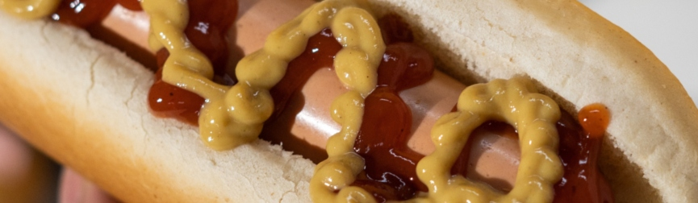

Monday September 4, 2023
The Allure of Hot Dogs: A Culinary Classic
In this article, we'll explore the fascinating history, diverse variations, and enduring popularity of the humble hot dog.
Read MoreFriday September 1, 2023
Home Depot's Hot Dogs Hit the Spot
In this article, we'll explore the Home Depot hot dogs and why they have become a beloved treat for both shoppers and employees.
Read MoreTuesday August 29, 2023
History of Hot Dogs: From Frankfurt to Fenway
In this journey through time, we'll explore the rich history of hot dogs, tracing their roots from Europe to the United States.
Read MoreThursday August 24, 2023
A Journey Through the Origins of Condiments
In this exploration, we'll trace the origins of condiments and their evolution throughout history.
Read More